Large scenes, richer spatial structure
Detailed spatial coverage and cross-scale energy entropy characterize the spatial content of the complete scenes.
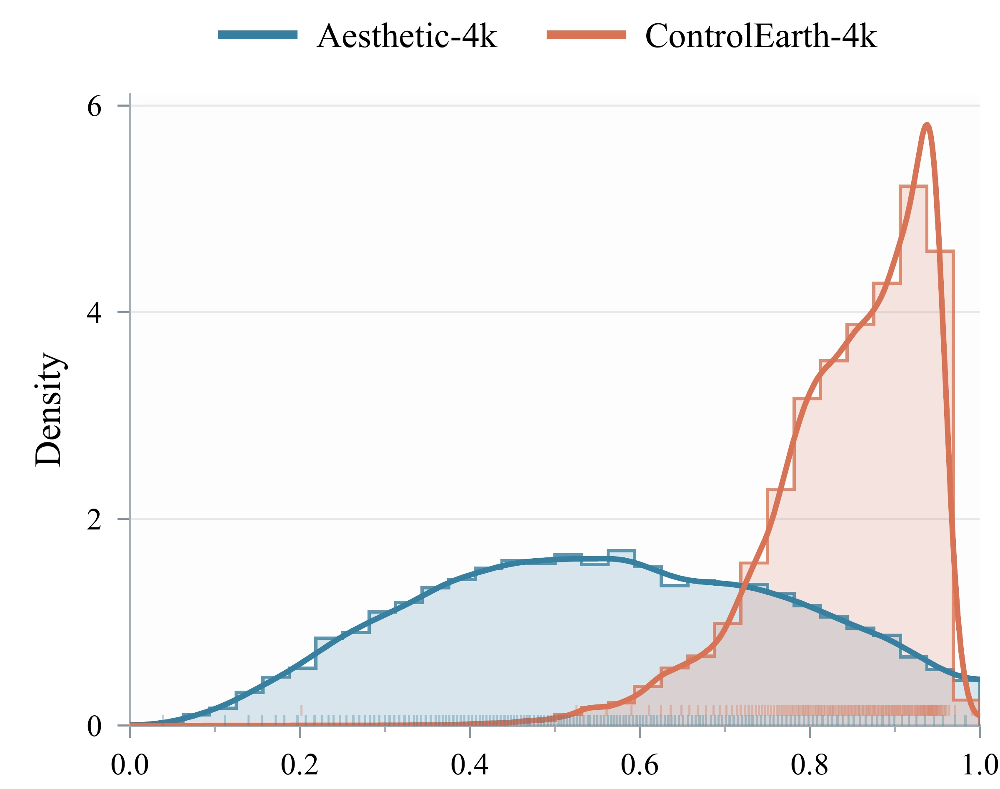
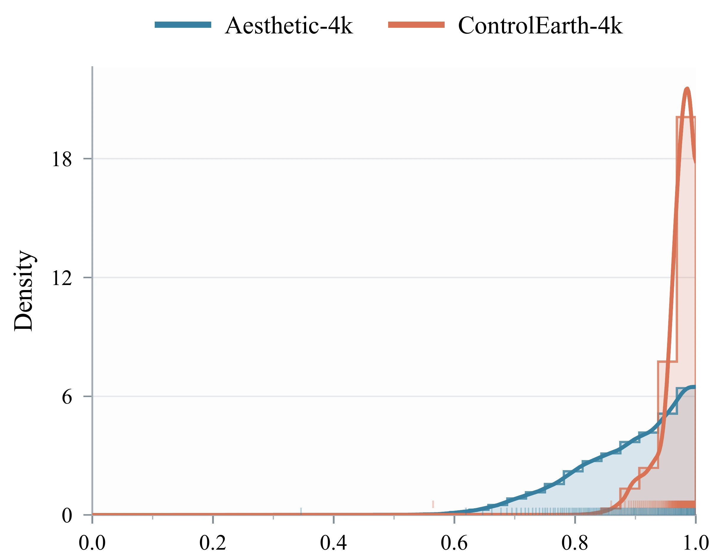
掌间绘山河，
一图生万象
Direct 4K Image Generation
with Semantic Layout Control
CONTROL THE LAYOUT. CREATE THE SCENE.
01 / THE BIG PICTURE
ControlEarth connects controllable image synthesis with the training needs of Earth observation. Given a semantic layout, it generates an entire 4096 × 4096 image with corresponding scene structure and category content. Regional text and structural conditions guide a pretrained flow matching model, while memory efficient regional hybrid attention supports spatial control over the full latent canvas. ControlEarth-4K provides 152,035 paired images and semantic segmentation maps for learning this correspondence at scale. The resulting imagery is evaluated through both generation quality and its value as additional training data. Experiments cover semantic segmentation, object detection, scene classification, building extraction, road extraction, and flood detection, with additional segmentation evaluation across four domain transfer directions. Explore the examples below to inspect layout control, local details, and measured augmentation gains.
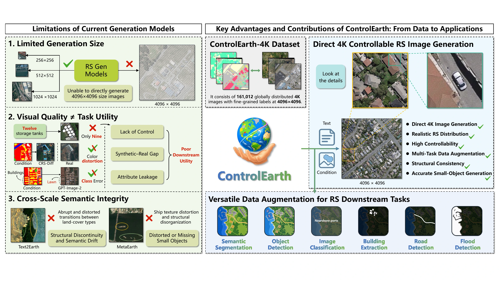
02 / CONTROL THE SCENE
Inspect the semantic input, the generated scene, and its real-image reference. Drag the white handle or use the slider to inspect spatial correspondence.
03 / LOOK CLOSER
Follow a scene from its overall organization to a selected local region. Select a numbered region, then drag the detail view to explore its surroundings.
Native 4096 × 4096 source. Drag to pan the selected region.
04 / DATA AT SCALE
152,035 paired 4096 × 4096 images and semantic segmentation maps support learning scene appearance together with spatial supervision.
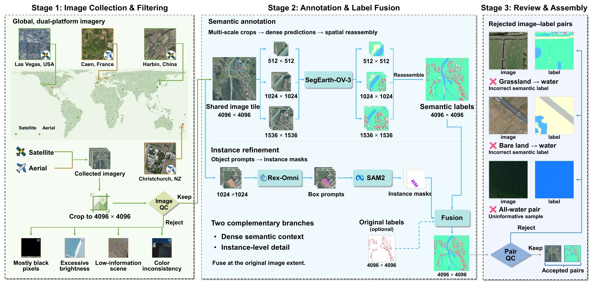
Detailed spatial coverage and cross-scale energy entropy characterize the spatial content of the complete scenes.


Pixel proportions describe regional coverage; instance counts reveal the coexistence of frequent objects and less common categories.
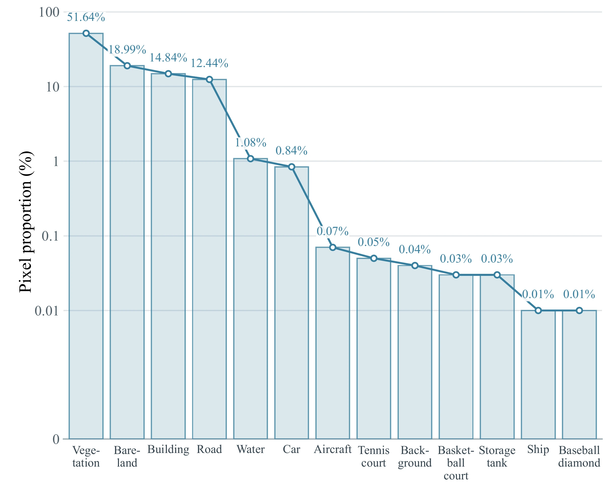
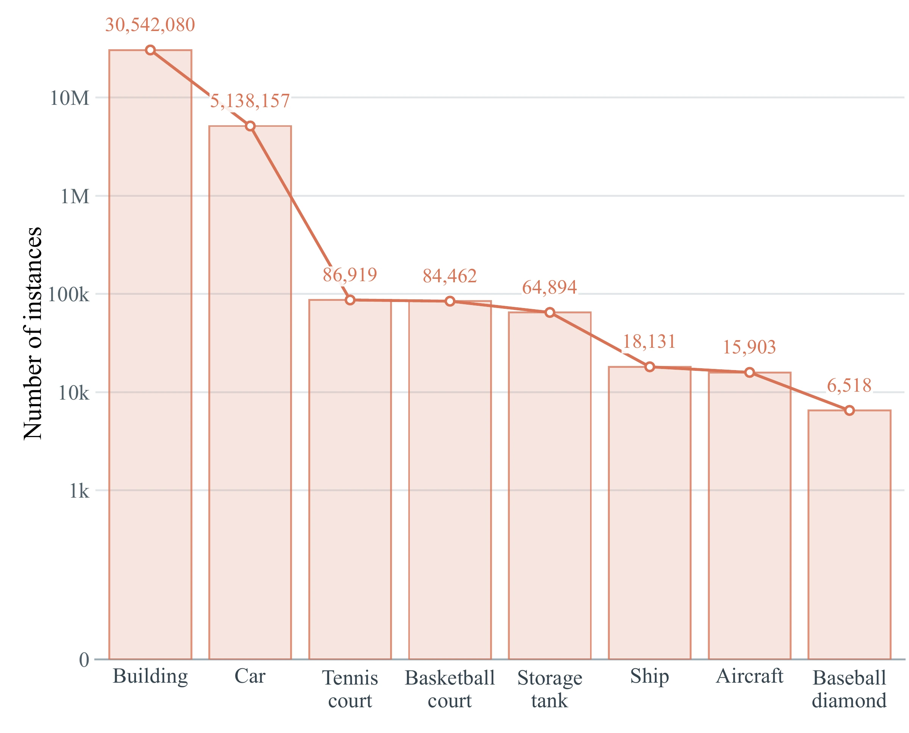
05 / INSIDE CONTROLEARTH
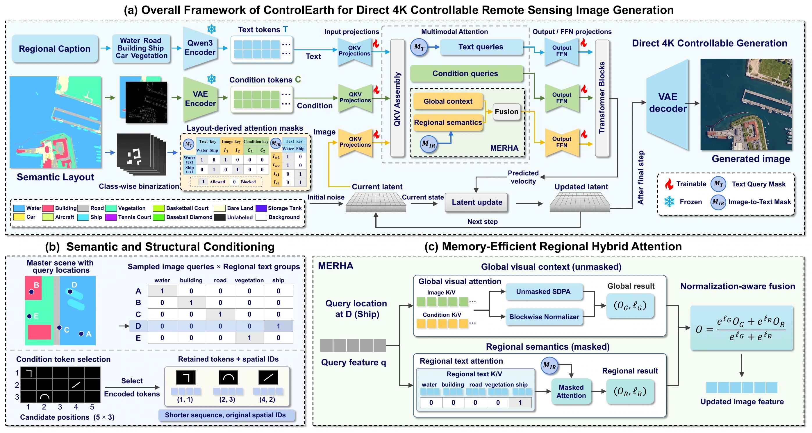
ControlEarth starts from noise on the complete target-size latent canvas. Regional category text supplies semantic content, while a structural condition supplies spatial information. A frozen text encoder and VAE encode these inputs; trainable low rank adapters introduce the conditioning into the generation backbone. Layout-derived masks associate regional text with the corresponding image locations. Memory efficient regional hybrid attention separates global visual context from spatially restricted regional text and combines the two outputs using their normalization statistics. This organization avoids allocating a complete dense control mask. Across sampling steps, the Transformer predicts a velocity field to update the latent state. The final latent is decoded into a complete image, rather than assembled from independently generated tiles.
06 / EVALUATE THE RESULT
ControlEarth obtains the best results on 10 of 12 metrics, including a tie in CLIP-I. Its FID of 20.85 is 39.4% lower than the strongest baseline value of 34.41.
The bubble plot brings distributional fidelity and semantic correspondence into a single view. Bubble area represents small-object semantic agreement.
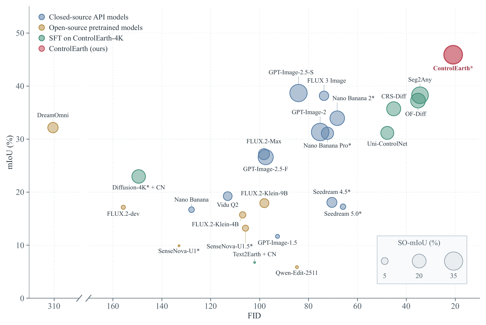
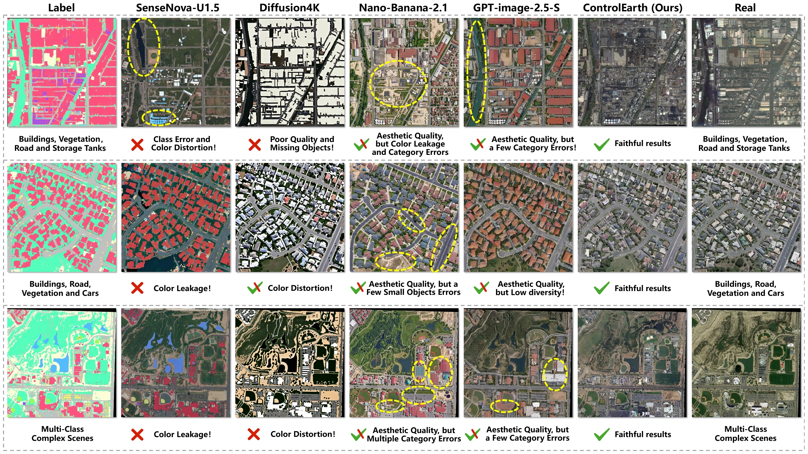
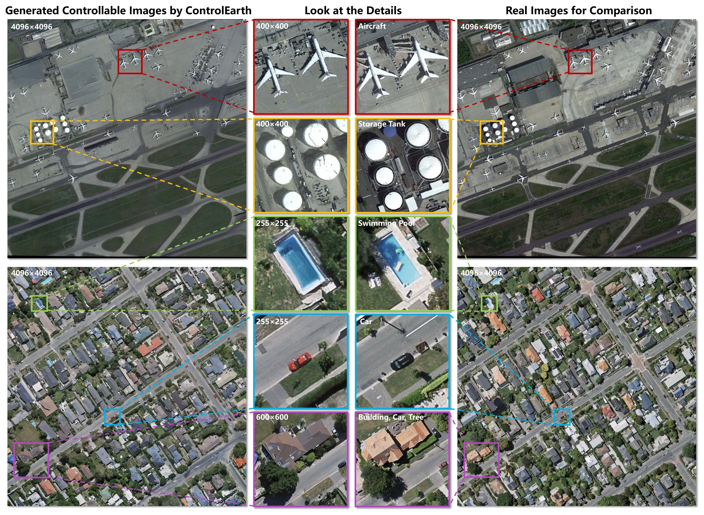
Best values are bold; second-best values are underlined. TFR and DDR are ranked by distance to 1. Asterisk: direct native 4K support.
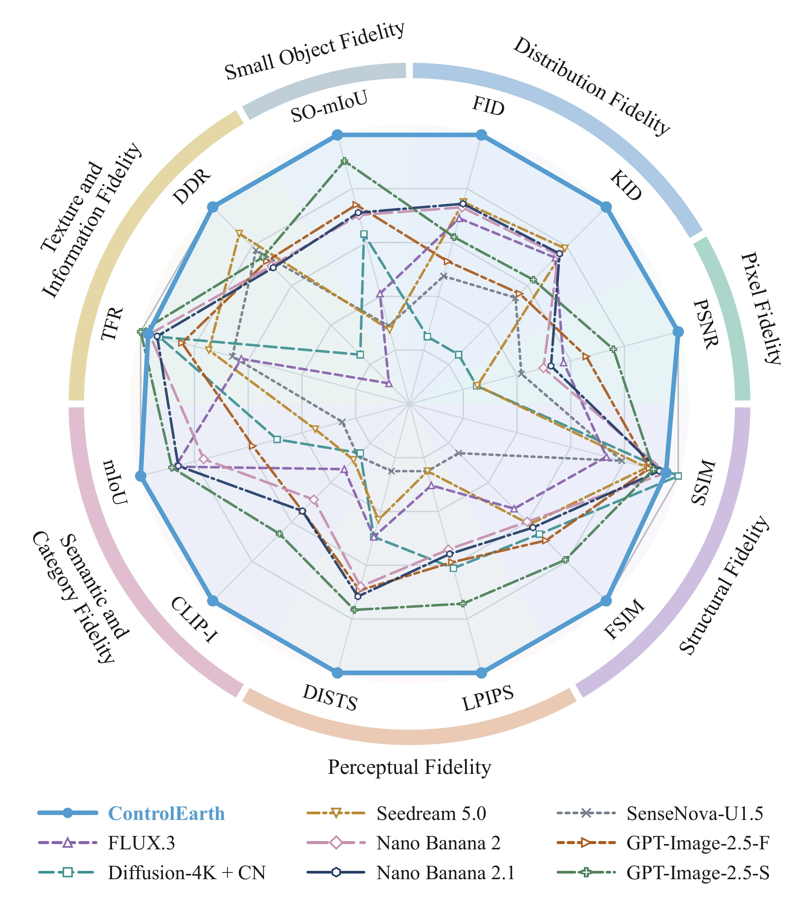
Relative scores are intended for visual comparison; axis scaling does not represent equal absolute changes in the original metrics.
07 / GENERATE FOR LEARNING
Task-specific conditions connect image synthesis to additional training data. The results below evaluate downstream models on fixed real test sets.
Real training data remain fixed. Adding 1× to 4× as many generated images changes the amount of synthetic supervision; 0× uses real training data alone.
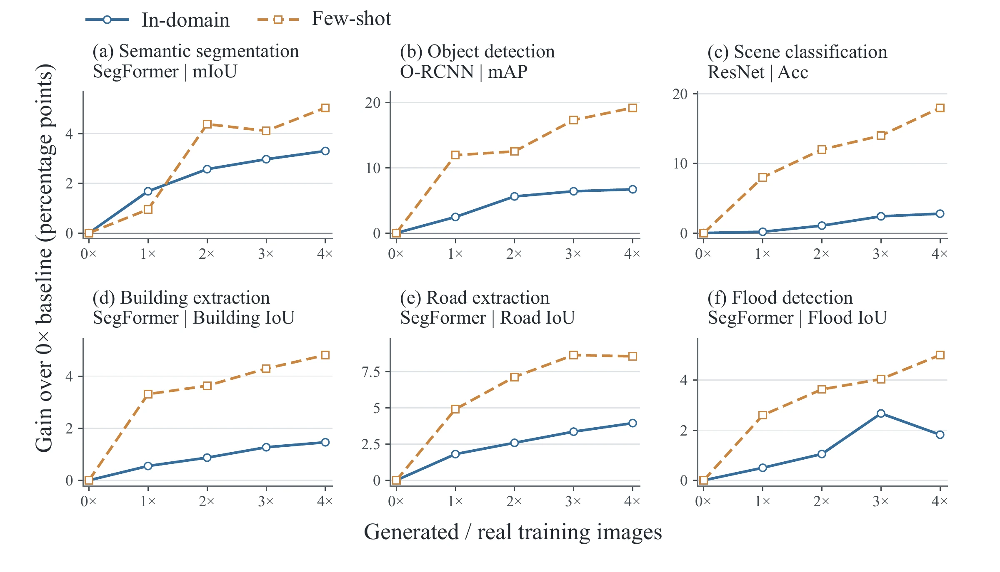
Few-shot experiments use 100 real training images and 100 test images. Cross-domain evidence concerns semantic segmentation across four transfer directions.
08 / KEEP EXPLORING
Provisional citation; publication details will be added at release.